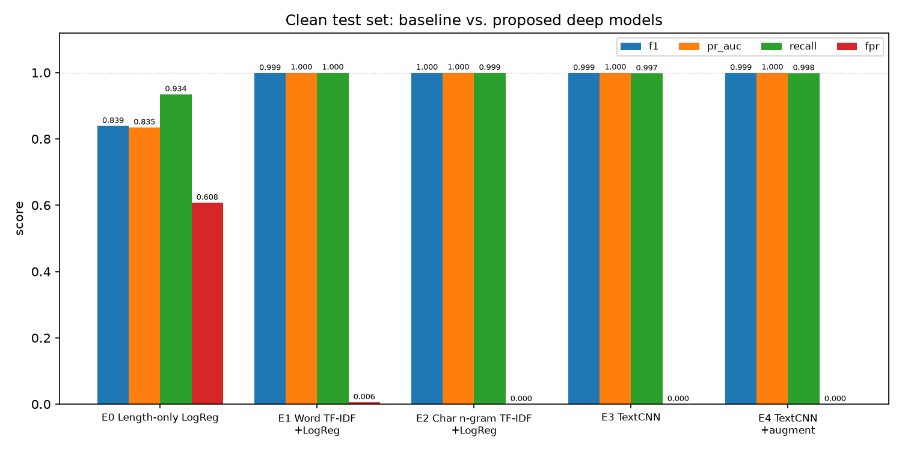
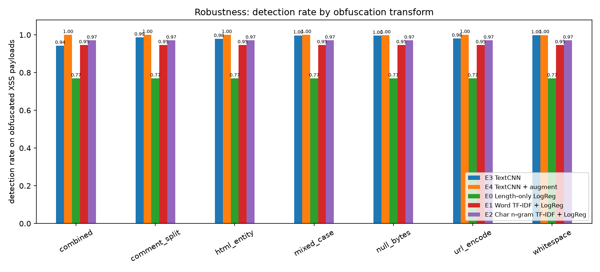
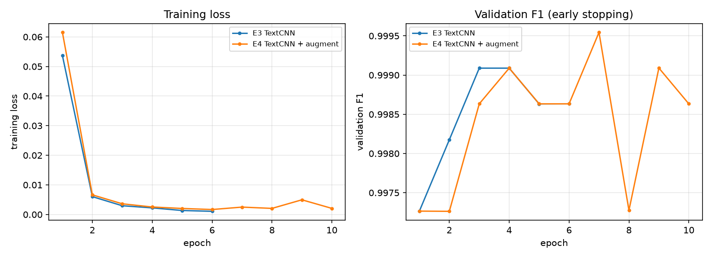

Assignment 6 — Cross-Site Scripting (XSS) Security and matching a research problem to an AI method.
Untrusted web input can carry XSS payloads; attackers obfuscate them to evade keyword filters. This project asks whether a character-level TextCNN trained with obfuscation augmentation detects obfuscated payloads more reliably than strong TF-IDF + Logistic Regression baselines — measured on a clean test set and on adversarially transformed hard sets.
Research question
Can a character-level TextCNN trained with obfuscation augmentation detect obfuscated XSS payloads more reliably than TF-IDF + Logistic Regression baselines, without sacrificing performance on clean input?
Objective: improve robustness (recall on obfuscated payloads) and false-positive safety (FPR on entity-encoded benign HTML), not just clean-set accuracy — clean-set scores are already saturated on this dataset.
Dataset
| Field | Value |
|---|---|
| Name | XSS dataset (HTML snippets, binary label) |
| URL | https://huggingface.co/datasets/AmirAliGharesoufloo/XSS |
| Description | 13,686 labeled HTML fragments: XSS payloads with event handlers / script vectors vs benign Wikipedia-style HTML. Public, no login; downloaded automatically by src/data_prep.py. |
| Cleaning | Whitespace-only snippets removed, then 2,716 duplicate payloads dropped before splitting (13,570 → 10,854 unique rows) to prevent identical payloads leaking across train/test. |
| Balance | 7,322 XSS (67.5%) vs 3,532 benign (32.5%) |
| Splits | Stratified 70/15/15 train/val/test, seed 42 — 7,597 / 1,628 / 1,629 |
Methods — why each was chosen
| Model | Role | Rationale |
|---|---|---|
| E0 Length-only LogReg | sanity baseline | exposes the dataset's length confound (benign ≈ 160 chars vs XSS ≈ 62) |
| E1 Word TF-IDF + LogReg | classic baseline | standard text classification reference |
| E2 Char n-gram TF-IDF + LogReg | strong baseline | characters are the natural unit for payloads; hard to beat |
| E3 TextCNN | proposed architecture | multi-kernel convolutions learn local patterns (<script, onerror=, javascript:) at several lengths; CPU-friendly |
| E4 TextCNN + augmentation | proposed improvement | random obfuscation of positive training samples teaches invariance to the evasions the baselines fail on — a clean ablation against E3 |
| E5 BiLSTM (optional) | DL comparison | sequential model; runnable via --include-bilstm |
Experimental design
- Tuning on validation only:
Cfor the baselines is chosen on validation F1; TextCNN uses early stopping on validation F1 (patience 3, max 12 epochs). The test split is touched once. - Hard sets from the held-out test split: every XSS test payload × 7 obfuscation transforms (mixed case, HTML entities, URL-encoding, NUL bytes, comment splitting, whitespace, multi-stage combined) = 7,693 obfuscated payloads, plus 530 entity-encoded benign snippets as a false-positive probe.
- Metrics: Accuracy, Precision, Recall, F1, PR-AUC, FPR — not accuracy alone. Obfuscated detection = fraction of obfuscated XSS payloads still flagged.
- Seed stability: E3/E4 repeated over seeds 42, 43, 44.
- CPU-only: sequences padded/truncated to 300 characters, batch 64, Adam; the full suite runs in minutes.
Results — clean held-out test set
| Model | Acc | Prec | Recall | F1 | PR-AUC | FPR |
|---|---|---|---|---|---|---|
| E0 Length-only LogReg | 0.7581 | 0.7613 | 0.9345 | 0.8391 | 0.8345 | 0.6075 |
| E1 Word TF-IDF + LogReg | 0.9982 | 0.9973 | 1.0000 | 0.9986 | 1.0000 | 0.0057 |
| E2 Char n-gram TF-IDF + LogReg | 0.9994 | 1.0000 | 0.9991 | 0.9995 | 1.0000 | 0.0000 |
| E3 TextCNN | 0.9982 | 1.0000 | 0.9973 | 0.9986 | 1.0000 | 0.0000 |
| E4 TextCNN + augment | 0.9988 | 1.0000 | 0.9982 | 0.9991 | 1.0000 | 0.0000 |
The E0 row shows the length confound: predicting by length alone reaches 0.84 F1 but flags 61% of benign input — a reminder that this dataset's clean scores are easy, and that the interesting differences appear under obfuscation.
Results — obfuscated payloads (the real test)
| Model | Obfuscated-XSS detection | FPR on encoded benign | Train time |
|---|---|---|---|
| E0 Length-only | 0.7693 | 0.1283 | < 1 s |
| E1 Word TF-IDF + LogReg | 0.9457 | 0.0075 | < 1 s |
| E2 Char TF-IDF + LogReg | 0.9705 | 0.0057 | 3 s |
| E3 TextCNN | 0.9828 | 0.0075 | 56 s |
| E4 TextCNN + augment | 0.9996 | 0.0906 | 100 s |
Detection rate by obfuscation transform (E3 → E4)
| Transform | E3 TextCNN | E4 + augment |
|---|---|---|
combined (2–3 chained) | 0.9427 | 1.0000 |
comment_split | 0.9864 | 1.0000 |
html_entity | 0.9791 | 1.0000 |
mixed_case | 0.9973 | 1.0000 |
null_bytes | 0.9955 | 0.9982 |
url_encode | 0.9809 | 1.0000 |
whitespace | 0.9982 | 0.9991 |
Seed stability (3 seeds)
| Model | Clean F1 | Obfuscated detection | FPR on encoded benign |
|---|---|---|---|
| E3 TextCNN | 0.9991 ± 0.0005 | 0.9896 ± 0.0066 | 0.0088 ± 0.0022 |
| E4 TextCNN + augment | 0.9988 ± 0.0005 | 0.9995 ± 0.0001 | 0.0616 ± 0.0325 |
Augmentation wins on every seed, is less variable, and leaves clean F1 statistically tied — but it pays for it with a higher false-positive rate on entity-encoded benign HTML (see limitations).
Mitigation probe — NUL-byte input normalization
NUL-byte injection (on\x00error=) is a classic filter-evasion trick, so the
probe strips NUL bytes from input before classification (inference only, no retraining):
| Input handling | E2 Char TF-IDF | E4 TextCNN + augment |
|---|---|---|
| raw | 0.9991 | 0.9982 |
| NUL-stripped | 0.9991 | 0.9982 |
Detection was already ≈ 1.0 and stripping changes nothing: for these models the
robustness comes from augmentation, not normalization. The probe also caught
a pipeline bug worth documenting — an early version stored the hard sets as CSV,
where pandas silently truncates strings at NUL bytes (ab\x00cd →
ab), understating robustness by ~17 points. JSON storage fixed the measurement.
Figures


combined obfuscation.
Limitations
- Clean-set scores are saturated (~0.999 for every serious model); this dataset separates easily, so meaningful differences appear only under obfuscation. Real request logs are noisier — replicate before operational conclusions.
- Trade-off: augmentation raises FPR on entity-encoded benign HTML (0.009 → 0.062 mean). An augmented model is more sensitive to entity-encoded content — exactly what escaped user text looks like. Deployment needs threshold tuning or encoding-aware validation, not one global threshold.
- Measurement integrity matters: the CSV/NUL truncation bug above shows a robustness claim is only as trustworthy as the pipeline measuring it.
- Single dataset with synthetic benign/attack provenance; obfuscation transforms approximate, but do not exhaust, real attacker evasion.
Reproduce
pip install -r requirements.txt
python src/data_prep.py # download + clean + split (auto-downloads CSV)
python src/run_experiments.py # E0-E4, tables, figures (~3 min, CPU)
python src/run_experiments.py --seeds 42,43,44 # seed-stability repeat (~9 min)
python src/predict.py "<script>alert(1)</script>" # try your own payloads
Full instructions: xss_payload_detection/README.md
· security chain: SECURITY_MAPPING.md